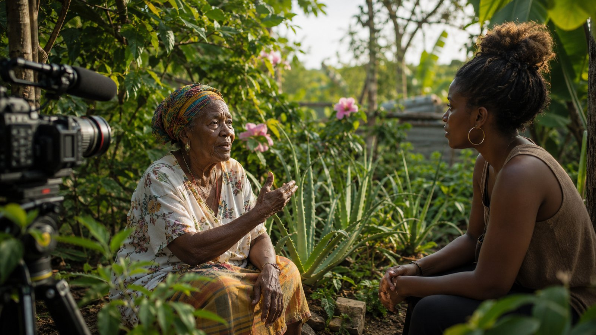

Now Filming · Jamaica's Healing Roots
Caribbean Storytime Studios is dedicated to telling authentic Caribbean stories that preserve culture, celebrate our people, inspire change, and connect generations.

Powerful documentaries and films that bring Caribbean stories to life.
Celebrating the traditions, history, and creative spirit of our people.
Showcasing the beauty and diversity of the Caribbean.
Inspiring awareness, education, and positive change.
Building a legacy of stories that empower future generations.
Who we are
Our work explores Caribbean culture, history, communities, landscapes, creativity, and lived experiences. Each production is developed with authenticity, visual excellence, and respect for local knowledge and participants.
We document cultural knowledge, traditions, and lived experiences so they can be shared with future generations.
We create films that build bridges between Caribbean communities and audiences around the world.
We tell stories that encourage curiosity, pride, conversation, and meaningful action.
Our Land
From Jamaica's Blue Mountains to hidden coastal highlands, the Caribbean's peaks and valleys shape the traditions, communities, and stories we film — including our current production, Jamaica's Healing Roots.
Original Productions
From documentaries and cultural films to human-interest stories and educational productions, Caribbean Storytime Studios creates work designed to amplify authentic voices and connect Caribbean communities with global audiences.